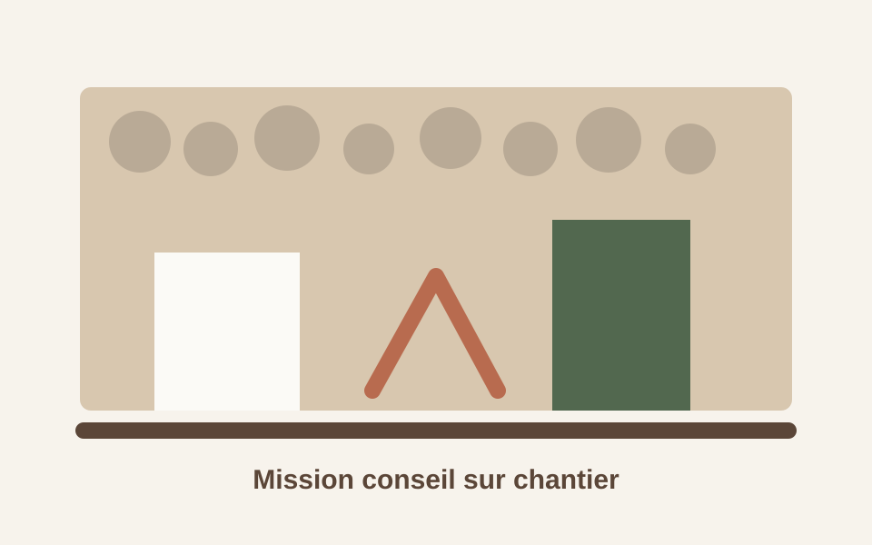

Mission conseil sur chantier
Un accompagnement ponctuel pour comprendre l'état d'un bâtiment ancien en pierre, identifier les priorités, éviter les erreurs de matériaux ou d'ordre de travaux, et orienter une rénovation cohérente.
- Bâtiments anciens en pierre
- Intervention en Bretagne
- Avant ou pendant les travaux
- Particuliers, agences immobilières, communes
- Tarif : 350 euros TTC